Open Your Business · Vision Board
Vision Board
If you dream it, you can build it.
These are the kinds of businesses we picture at Middlebrook, sketched out with our planners. Use one as a starting point, or bring something we have not thought of. You do not need to wait for us: buy the ground, bring your plan, and build on your own timeline.
Four places to build and more
These four are just a start. There is room to build all across Middlebrook, so if you have another spot in mind, ask Tim Portzen. Pick a place below to see the ideas we have sketched for it.
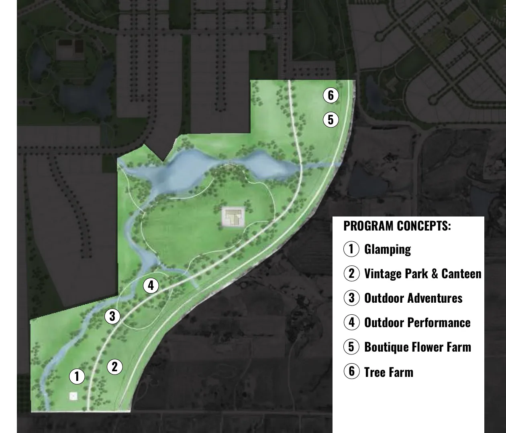
Rural retail, hospitality, and gathering places along the open green space and trails of Middlebrook Meadow, made for slowing down and spending the day outside.
- Glamping: canvas tents and small cabins
- Vintage Park and Canteen: restored campers to stay in
- Outdoor Adventures: ropes courses and a climbing tower
- Outdoor Performance: an amphitheater on the lawn
-
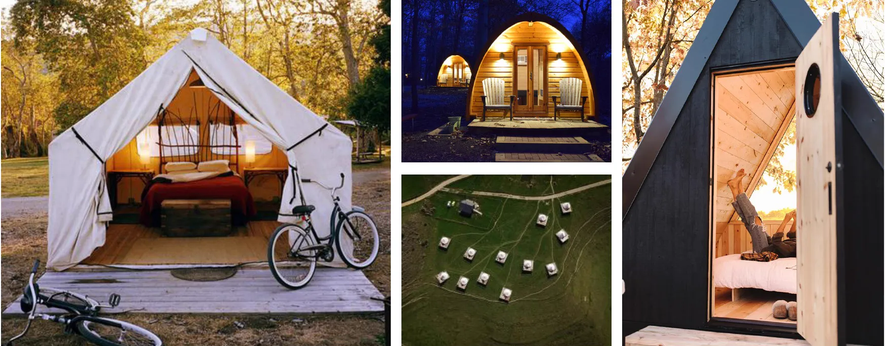
Glamping
Canvas tents and small cabins with real beds, heat, and hot water, set out in the Meadow for guests who want to slow down outdoors.
Inspired by The Resort at Paws Up, Ithaca by Firelight Camps, Shawnee Inn, Cherry Hill Park, and Belcampo Farms
-
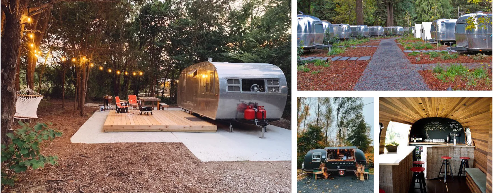
Vintage Park and Canteen
Restored campers from the ’50s to the ’70s to stay the night in, with a few trailers turned into a canteen for food and drinks.
Inspired by Caravan Outpost Ojai, Launch Pointe, Hicksville Trailer Palace, Flying Flags RV Resort, and Waypoint Ventura
-
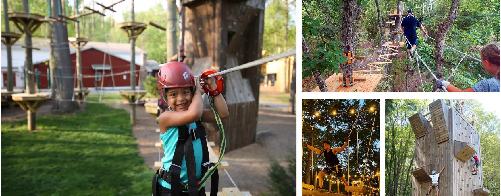
Outdoor Adventures
Ropes courses, a giant swing, and a climbing tower for families, schools, and teams looking for a challenge.
Inspired by Wild Acadia, Ontree Park, Area 47, The Bear Grylls Adventure, and The Ranch at Rock Creek
-
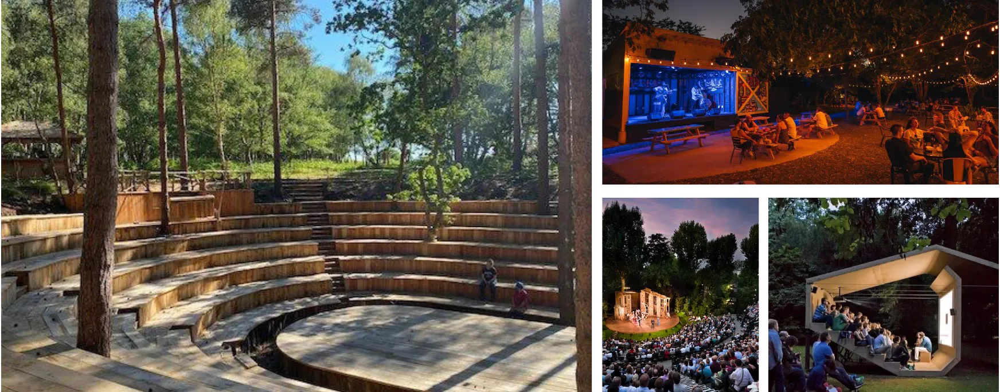
Outdoor Performance
An amphitheater for plays, concerts, and community events, with room on the lawn for a picnic before the show.
Inspired by Cotuit Center for the Arts, Scott Outdoor Amphitheater, Sundance Resort Theater, and Delacorte Theater
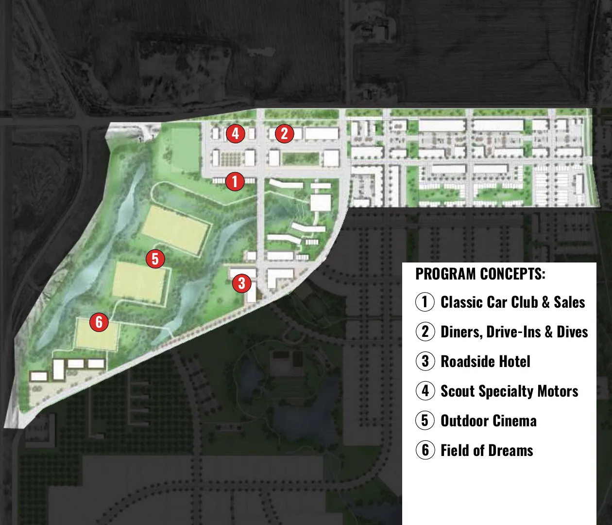
West Commercial · Direction 1
Cars, road trips, and summer nights on the west side of Middlebrook, just off Interstate 35. One lot here is for sale now.
- Classic Car Club and Sales
- Diner and Drive-In
- Roadside Motor Hotel
- Scout Specialty Motors
- Outdoor Cinema
- ’Lil Field of Dreams
-
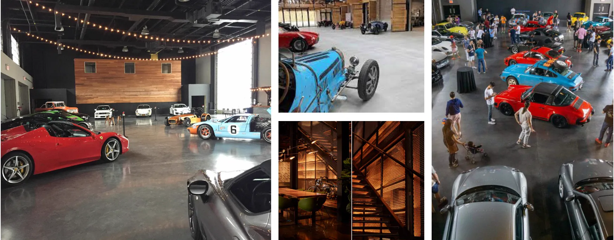
Classic Car Club and Sales
A members’ club and showroom for classic cars, supercars, and vintage motorcycles, with restoration bays, events, and a place to gather.
Inspired by Classic Car Club Manhattan, Garage 77, Barry’s Car Barn, Farmboy Garage, Classic Autoworx, and Otto Car Club
-
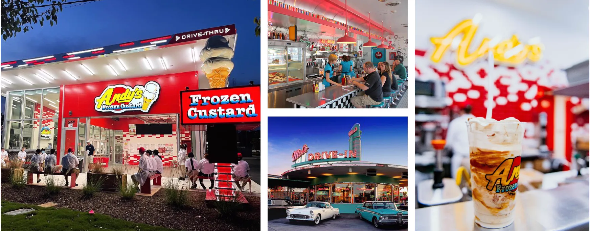
Diner and Drive-In
A mid-century diner and drive-in serving burgers, hot dogs, frozen custard, shakes, and root beer floats.
Inspired by Rosebud, Mel’s Drive-In, Andy’s Frozen Custard, and Black Cat Ice Cream
-
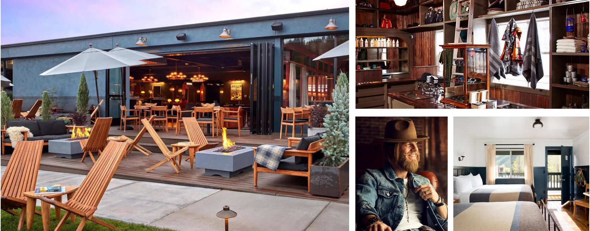
Roadside Motor Hotel
A boutique motor lodge of about 24 rooms, styled after the Route 66 motels of the 1960s, with an easy stop right off the interstate.
Inspired by Beck’s Motor Lodge, Calistoga Motor Lodge, Del Marcos Hotel, and Anvil Hotel
-
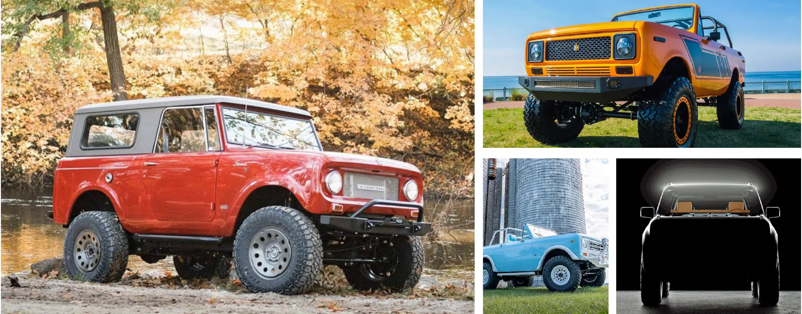
Scout Specialty Motors
A regional home for the Scout, the truck International Harvester made famous: classic restorations, custom builds, and the new electric Scouts.
Inspired by Velocity Restorations, New Legend 4x4, Custom Scouts, and Legacy Overland
-
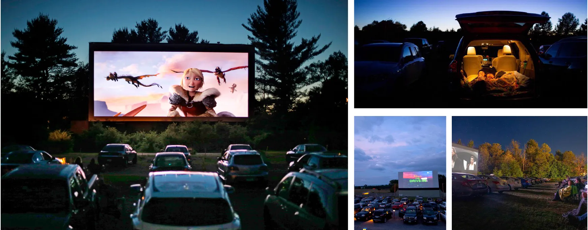
Outdoor Cinema
A drive-in movie screen in an open field, for summer nights watching a double feature under the stars.
Inspired by Valle Drive In, Coyote Drive In, Delsea Drive In, Field of Dreams Drive In, Harvest Moon Drive In, and Fairlee Motel and Drive In
-
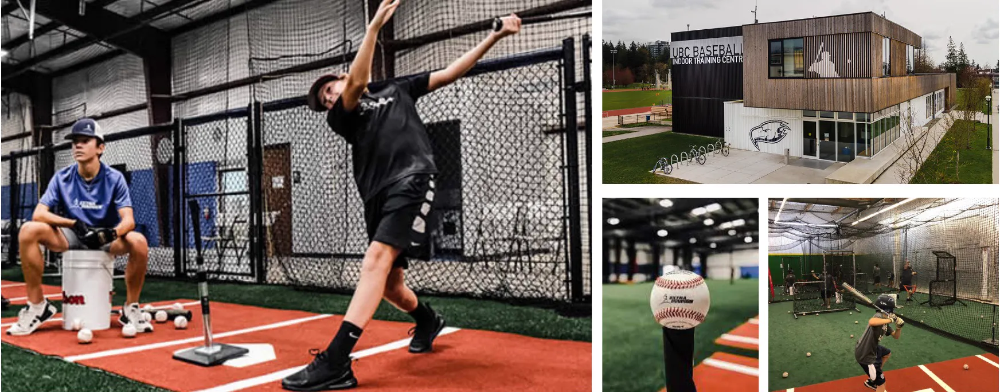
’Lil Field of Dreams
A youth baseball diamond ringed by corn, where every home run disappears into the rows, with an indoor training facility for year-round practice.
Inspired by the Field of Dreams in Dyersville
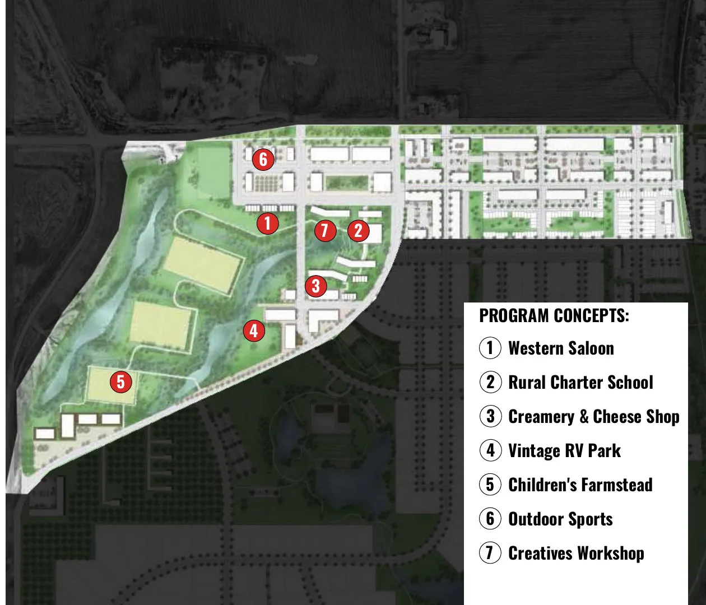
West Commercial · Direction 2
The same ground, imagined another way: food, learning, making, and the outdoors, with a little of the Old West.
- Western Saloon
- Rural Charter School
- Creamery and Cheese Shop
- Vintage RV Park
- Children’s Farmstead
- Outdoor Sports
- Creatives Workshop
-
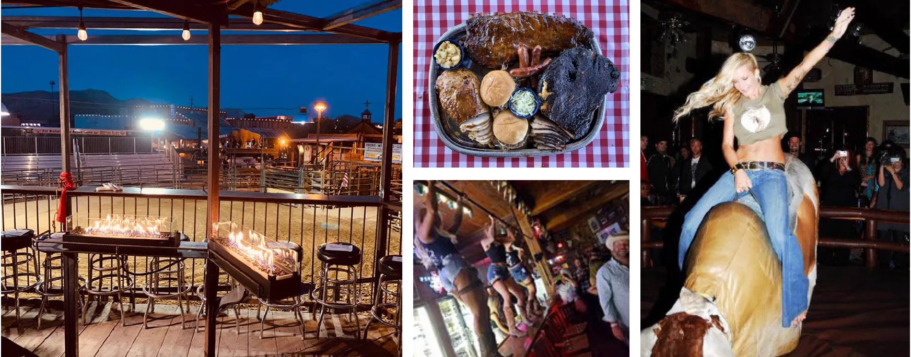
Western Saloon
BBQ, live music, dance lessons, and boots-and-hats nights, with something for everyone from families to friends celebrating a 21st birthday.
Inspired by Buffalo Chip Saloon, Club Rodeo, and Slide and Ride
-
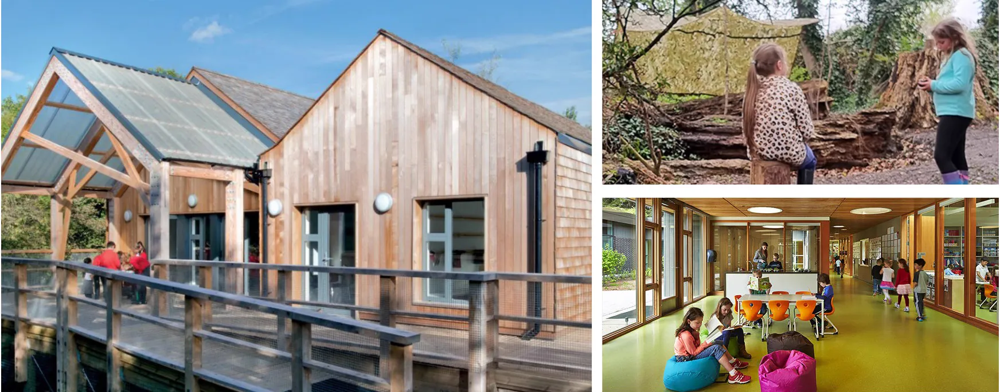
Rural Charter School
A charter school with a fresh approach, from project-based learning to STEM, giving families another choice close to home.
Inspired by Sugar Valley Rural Charter, Roots and Wings Community, Crossroad Academy, Glacial Hills Elementary, and Prescott Valley Charter
-
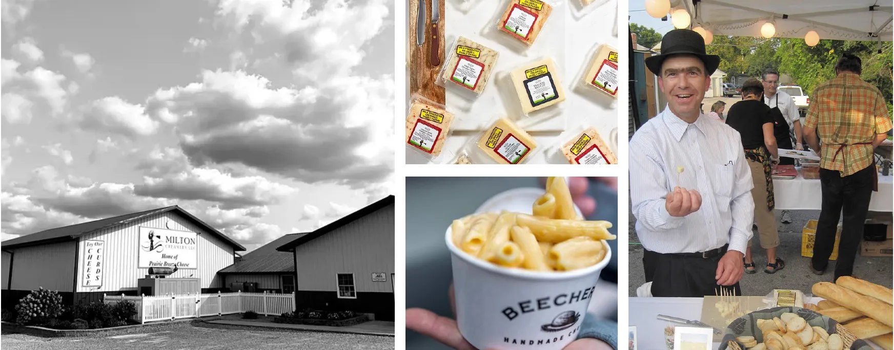
Creamery and Cheese Shop
A small creamery making cheese from Iowa milk, with a shop and tasting counter, adding value for local dairy farmers.
Inspired by Milton Creamery, Beecher’s Handmade Cheese, and The Cheese Shop
-
Vintage RV Park
The same idea as the Vintage Park and Canteen in the Meadows, placed here instead.
-
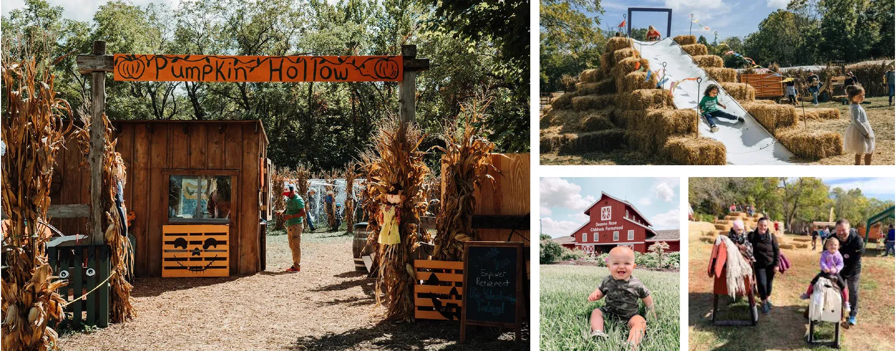
Children’s Farmstead
A hands-on farm for kids, with animals, gardens, nature trails, a fishing pond, and a one-room schoolhouse.
Inspired by Deanna Rose Children’s Farmstead and Living History Farms
-
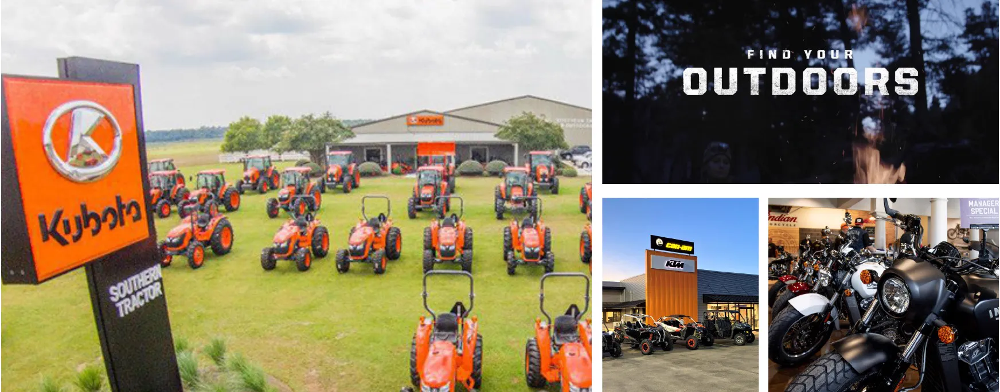
Outdoor Sports
A dealership for tractors, side-by-sides, motorcycles, and outdoor gear, for farmers, hunters, and weekend riders.
Inspired by Capital City Kubota, Hicklin Powersports, Tracker Off Road, Van Wall Powersports, Stroom Powersports, and Big Barn Harley-Davidson
-
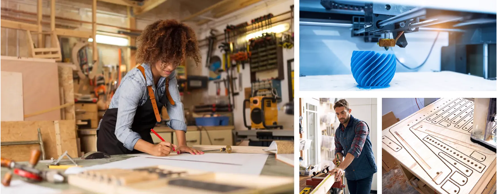
Creatives Workshop
A membership makerspace with a woodshop, studios, and classes in woodworking, leather, and jewelry, plus a bar for making things with friends.
Inspired by Hammerspace, Maker Village, Made in KC, Mainframe Studios, and Upstairs Circus
Main Street · Community
Main Street is already taking shape in the Town Center, with the Live-Work Townhomes and their shops. The first two ideas are shared places for the whole community, looking for partners, sponsors, and artists to help bring them to life. The other two are businesses you could open today.
- Main Street Gardens: a park and town square
- RAGBRAI Artists’ Trail: sculptures and murals
- A bike shop: a Live-Work Townhome for sale
- A neighborhood gym
-

Main Street Gardens
A park for everyone and a true town square: room to slow down outdoors, with programs, classes, and events that show off the talent of rural Iowa and start new traditions.
Inspired by Klyde Warren Park, Main Street Garden Park, Hance Park, and Gathering Place
-
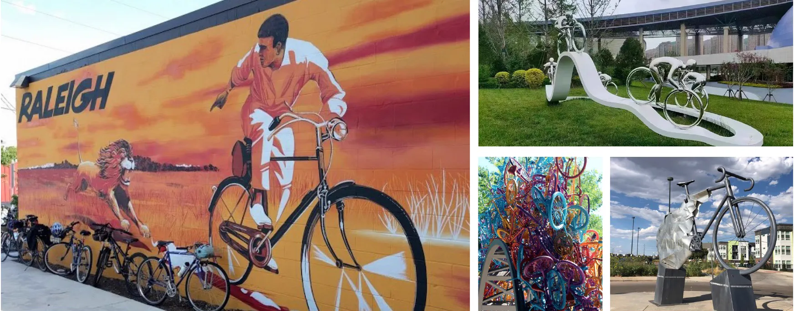
RAGBRAI Artists’ Trail
A trail of public sculptures and murals celebrating Iowa’s bike culture, rural life, and local artists.
Inspired by Mural Arts Philadelphia, The Traveling Man, the Bicycle Arch in Knoxville, and the Raleigh murals
-
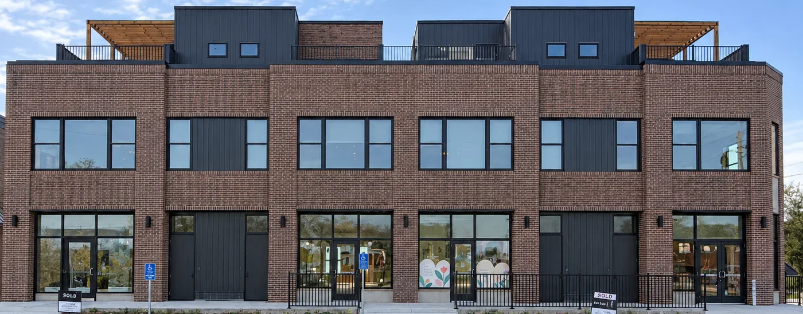
A Bike Shop on Main Street
Dream of owning a bike shop? The Great Western Trail runs right through the Town Center, and a Live-Work Townhome for sale on Main Street could be the perfect fit: retail space on the main level, a two-car garage and bonus room in the lower level for repairs and storage, and a two-bedroom home upstairs. Live above, work below.
-
A Neighborhood Gym
A gym or fitness studio on Main Street, close enough that neighbors walk or bike to a morning class, then head to the trail or the Farm Stand after. A storefront in the Town Center or a Live-Work Townhome could be the place to start.

Have a different idea?
Bring your own plan · Build on your own timeline
Pitch your ideaTim Portzen · Tim@DiligentDevelopment.com · Diligent Development